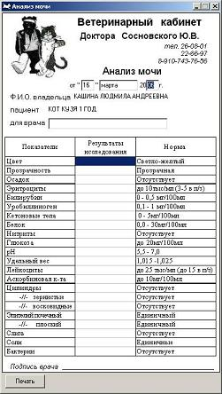
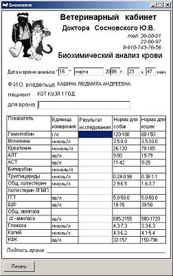

В главной таблице содержится основная информация о пациенте, а на правой панели информация об услугах для текущего пациента. Стандартные и многократно повторяемые манипуляции, лекарственные препараты и продажи выбираются из стандартных списков. Нестандартные манипуляции вводятся в виде дополнительных данных отдельно для каждого пациента.
При нажатии на кнопку с изображением ручки появляются окна с соответствующими списками, из которых можно выбрать требуемые варианты, отмечая их галочками.
Эти списки можно отредактировать, выбрав в меню Операции пункт Редактирование списков, после чего появится окно, показанное на рисунке.
В этом окне есть 4 таблицы, в которые вы вводите название манипуляций, лекарств и товаров, которые будут отображаться в соответствующих списках. Для вставки и удаления записей используются клавиши ins и del. Списки автоматически сортируются в алфавитном порядке.
Внизу главного окна программы есть 4 кнопки: Лейкоформула, Анализ мочи, Биохимия и Прочее. Нажимая на кнопки, вы открываете соответствующие плавающие окна, для изменения и печати данных анализов пациента, выделенного в списке.
Здесь вы можете внести данные по результатам анализов, нажать кнопку Печать, после чего появится предварительный просмотр, из окна которого вы сможете распечатать результаты анализов.
В окне Биохимия также существует возможность указать нормы, принятые в вашей клинике, изменять их значение, а также менять единицы измерений показателей.
 В окне Прочее вы можете ввести произвольные данные, например, наблюдение за пациентом после операции. Предусмотрена возможность распечатки данной информации.